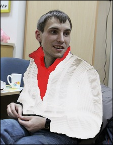

Если Вам крайне важно быстро освоить науку создания профессиональных динамических оперденей, но Вы в этом ничего не смыслите, то Вы попали по адресу...

Прогресс не стоит на месте. Сегодня обычные бумажные самоучители уступают место более эффективным, наглядным и результативным методикам.
Благодаря технологии экранного видео, сегодня Вы можете изучить материал и начать применять его на практике в три раза быстрее своего конкурента, который будет пыхтеть над книгами и рвать на себе волосы от того, что не может добиться нужного результата.
От: Олег (всех Олегов, сразу)
Тема: 6,66 часовой из будущего видеокурса по Erlang и Mnesia.
Если Вы попали на данную страницу, то скорее всего Вы хотите научиться
создавать динамические опердени, либо усовершенствовать свой свою старую и
сделать его более функциональным, а значит более чистой и мутабельной
простой и прибыльной.
И что самое главное, Вы не хотите тратить на изучение этого дела много времени, которого и так ни на что не хватает!
Если я прав, то информация из будущего, представленная на этой странице будет очень важна и интересна для Вас.
Типичная опердень
«Опердень кодогенерировали-кодогенерировали, кодогенерировали-кодогенерировали, кодогенерировали-кодогенерировали, да не выкодогенерировали» — знакомая проблема?
Мы знаём её решение!
— полное отсутствие вкуса
Haskell-программист — поднимает штангу именем теории категорий
Erlang-программисты — заботливые отцы, а значит их любят девушки!
Спасибо Вам за гениальный курс.
Я теперь представить себе не могу, как я раньше жил без него. Чуть не потратил свою жизнь зря...
Буду советовать родным и знакомым.
Это не курс, это БОМБА!
Штан-гу!
Штан-гу!
Штан-гу!
Вот, отлично. Простым понятным языком для рабочего класса. Предлагаю оформить совместное предприятие по регистрации и оценке оперденей. Будем брать комиссию 10% от оплаты чужих оперденей и рассказывать заказчикам почему эти опердени нужны. План 100% работает, свяжись со мной по телефону +37529-***-**-** (номер дать не могу, боюсь завистливых конкурентов). P.S. Никаких имён, нас прослушивают и прочитывают
"Ваш курс пробудил во мне тягу к творчеству, тягу творить новое и улучшать старое, быть полезным обществу и окружающим, я не понимаю, как я жил без него все эти годы." Добрый день Олег! Где же я был раньше, почему не знал о Вашем курсе? Неделю назад получил Ваш диск и могу с уверенностью сказать - это ОНО!!! ТО, чего не хватало всю мою жизнь. Та самая основа гармоничного существования человека среди себе подобных, не во вред, а во благо. Ваш курс пробудил во мне тягу к творчеству, тягу творить новое и улучшать старое, быть полезным обществу и окружающим, я не понимаю, как я жил без него все эти годы. Знания, которые Вы передаёте нам помогли мне убедить моих заказчиков в том, что они нашли нужного им человека, что их бизнес будет процветать не через 3 года, а гораздо раньше - через пару дней. Мало того - это сработало! В течении пары дней, применяя erlang + mnesia я смог создать опердень, удовлетворяющую все пожелания клиентов. Более того! Через неделю использования продукта они сами обратились ко мне с просьбой добавить новый функционал, внедрять который они планировали не ранее, чем через 3 года после начала своего дела. Поразительно! Творческий порыв с моей стороны привёл к потоку фантазии и взрыву идей со стороны заказчиков. А они между прочим не студенты, а взрослые люди. Вот так я поверил в Вас, Олег, и в качество Вашего продукта. Примите благодарность от моих довольных клиентов и лично от меня. Чтобы я делал, где был (наверно тягал бы штангу), елси бы не Ваш курс, открывший мне глаза на истинное полождение дел в это мире. Вообще, я щитаю, этот курс достоин называться лучшим медийным обучающим продуктом тысячелетия! Всё, пора бежать, звонят новые клиенты, спешу на встречу. Ещё раз СПАСИБО!
Здравствуйте, Олег! Я всю жизнь хотел начать зарабатывать бапки, но не знал как правильно это делать. Я работал курьером, но пацаны говорят, что это отстойная работа, т.к. задача о курьере NP-полная (полная нереальных пи..цов), поэтому реальных денег она не принесет. Я пробывал делать динамические сайты на РНР и МуSQL, но младший брат нашел мои пароли и стер все сайты, я только зря потратил 1799 рублей на курс того поца в пинжаке. Я пробывал самостаятельно выучить теорию котегорий, но непонел, почему при построении котегории, где объекты - типы данных, а морфизмы - функции, из варианта типизированного лямбда-исчисления на комбинаторах получается замкнутая симитричная моноидальная катигория (подобно Hilb, где где объекты - канечномерные гильбертовы пространства с обычным тензорным произведением, а морфизмы - линейные операторы), но не декартова, каковой является Set. Это завело меня в тупик, и я начал пить. Но встретив Ваш курс "Секреты Создания Профессиональных Эрланг Оперденей С Использованием Базы Данных Mnesia", я понел, что спасен! Это совершенно замечательный курс, он открыл мне глаза, теперь я знаю как надо делать бапки, а также как производить горячую замену кода, выполняющего в этом момент расчет баланса предприятия. Я рекомендовал Ваш курс всем пацанам на раёне, они уже пошли добывать на него деньги, что резко подняло уровень преступности, но это ненадолго, и я уверен, что того стоит.